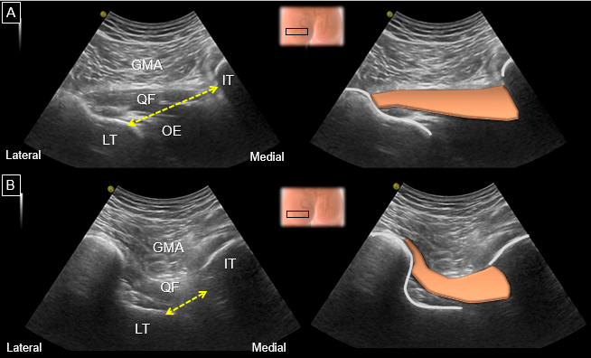

Respuesta clínica corta
¿Puede la ecografía diagnosticar por sí sola un pinzamiento isquiofemoral?
No. Puede medir el espacio y complementar la exploración, pero la evidencia es pequeña y la especificidad publicada fue limitada.
Dato claveValidaciones de n=10 y n=35 · sensibilidad 92% · especificidad 68,4%
La ecografía puede visualizar la musculatura rotadora profunda y medir dinámicamente el espacio isquiofemoral, pero la resonancia sigue siendo la referencia y ninguna cifra ecográfica debe interpretarse como diagnóstico aislado.
Observado
Qué encontró y cómo interpretarlo
La revisión integra anatomía, pruebas clínicas, resonancia, ecografía e intervenciones guiadas, pero no presenta un método reproducible de búsqueda, selección o evaluación del riesgo de sesgo. Sus conclusiones dependen de estudios pequeños y heterogéneos.
En una validación con 10 participantes asintomáticos, la diferencia media entre ecografía y resonancia fue de 1,25 mm, con un intervalo del 95% de -0,49 a 2,98 mm, y la correlación fue r=0,781. La muestra no permite establecer rendimiento diagnóstico.
Otro estudio incluyó 16 pacientes con dolor de cadera y 19 controles. Con un punto de corte ecográfico de 2,14 cm informó sensibilidad del 92% y especificidad del 68,4%. La especificidad limitada implica numerosos resultados positivos en personas sin el cuadro de interés.
Las pruebas de zancada larga y de pinzamiento isquiofemoral mostraron cifras prometedoras frente a referencias de imagen, pero proceden de evidencia limitada y no sustituyen el diagnóstico diferencial del dolor posterior de cadera.
La sección terapéutica reúne casos y series pequeñas de infiltraciones con anestésico, corticoide, proloterapia o toxina botulínica. Sin ensayos comparativos no permite concluir eficacia, seguridad relativa ni superioridad frente a ejercicio u otras opciones.
Atlas del artículo
Imágenes para entender el procedimiento
Estas figuras proceden del artículo original y se reproducen con licencia abierta verificada. Se muestran por su utilidad anatómica o técnica, no como prueba aislada de diagnóstico o eficacia.

Medición dinámica del espacio isquiofemoral durante rotación interna y externa; la línea discontinua une la tuberosidad isquiática con el trocánter menor.
Cómo leerlaLa figura enseña dónde medir; una distancia reducida no establece por sí sola el síndrome ni identifica la causa del dolor.
Wu WT et al., figura 12 del artículo original · Fuente · Licencia CC BY.
Procedimiento del artículo
Cómo se explora y mide el espacio isquiofemoral
La revisión propone un barrido posterior con transductor curvilíneo para reconocer los rotadores profundos y medir la distancia entre la tuberosidad isquiática y el trocánter menor en un plano axial, observando además su cambio con la rotación femoral.
- Transductor
- Curvilíneo para alcanzar las estructuras profundas
- Plano de medida
- Axial posterior con maniobra de talón-punta
- Límites óseos
- Corteza medial del trocánter menor y corteza lateral de la tuberosidad isquiática
- Componente dinámico
- Comparación durante rotación interna y externa del fémur
- 01
Orientarse desde la pelvis posterior
El transductor se coloca horizontalmente a la altura de la espina ilíaca posterosuperior y se desplaza caudalmente hasta reconocer la escotadura ciática mayor.
- Referencias
- Glúteos mayor, medio y menor, pared ilíaca posterior, escotadura ciática mayor e isquion.
- Lectura
- Este recorrido inicial evita confundir planos superficiales con los rotadores profundos.
- 02
Seguir los rotadores externos
Se identifica el piriforme y, descendiendo en el mismo eje, los gemelos, el obturador interno, el cuadrado femoral y el obturador externo.
- Referencias
- Piriforme, tendón del obturador interno, gemelos, cuadrado femoral, obturador externo y nervio ciático.
- Lectura
- La rotación femoral puede ayudar a reconocer el patrón móvil del obturador interno y la relación entre estructuras.
- 03
Obtener la ventana del cuadrado femoral
Se ajusta el transductor hasta visualizar simultáneamente la tuberosidad isquiática, el trocánter menor y el cuadrado femoral interpuesto.
- Referencias
- Glúteo mayor superficial, cuadrado femoral, obturador externo, tuberosidad isquiática y trocánter menor.
- Lectura
- La imagen permite ubicar la región de interés; la ecogenicidad aislada no confirma una lesión.
- 04
Medir y comprobar el cambio dinámico
Mediante una inclinación talón-punta se alinean las dos corticales y se mide la distancia más corta entre ambas durante rotación interna y externa.
- Referencias
- Corteza medial del trocánter menor y corteza lateral de la tuberosidad isquiática.
- Lectura
- La distancia depende de la posición y la anatomía; debe registrarse el protocolo y evitar interpretar un único umbral fuera de contexto.
Procedimiento resumido a partir de la sección de evaluación ecográfica dinámica y de la figura 12 del artículo. Requiere competencia específica y no sustituye una valoración clínica completa ni la imagen de referencia cuando está indicada.
Aplicabilidad
Qué significa clínicamente
La ecografía puede complementar la valoración cuando la pregunta es anatómica o dinámica y el profesional domina la exploración de estructuras profundas.
La medida debe registrar posición, rotación femoral, límites óseos y calidad de la ventana para permitir comparaciones posteriores.
Una medida reducida puede aumentar la sospecha, pero necesita concordancia con síntomas, pruebas clínicas y, cuando esté indicada, resonancia.
La figura aporta un procedimiento de adquisición; no convierte la ecografía en una prueba de cribado rutinaria ni en un criterio automático de intervención.
Límite
Qué no permite afirmar
Revisión narrativa sin estrategia completa, selección por duplicado ni evaluación formal de la calidad de los estudios incluidos.
Estudios de validación pequeños, con poblaciones y referencias diferentes, que no establecen un umbral universal.
Fiabilidad entre evaluadores de moderada a limitada incluso después de una formación breve.
La evidencia sobre infiltraciones procede de casos y series sin comparadores, seguimiento robusto o evaluación suficiente de daños.
Contexto
¿Se parece a tu paciente?
- Población estudiada
- Síntesis de estudios pequeños sobre dolor posterior de cadera, medición del espacio isquiofemoral, pruebas clínicas e intervenciones ecoguiadas.
- Diseño
- Revisión narrativa de diagnóstico por imagen e intervenciones guiadas
- Resultado evaluado
- Concordancia con resonancia y rendimiento diagnóstico de la distancia ecográfica
Fuente primaria
Lee el estudio, no solo nuestro análisis
Wu WT, Chang KV, Mezian K, Naňka O, Ricci V, Chang HC, et al. Ischiofemoral Impingement Syndrome: Clinical and Imaging/Guidance Issues with Special Focus on Ultrasonography. Diagnostics (Basel). 2023;13(1):139. doi: 10.3390/diagnostics13010139
Responsabilidad editorial
Francisco José Extremera García
Fisioterapeuta colegiado ICPFA 4288 · Osteópata D.O.
Creador y responsable editorial de FisioLógico
- Última revisión
- Conflictos de interés
- Ninguno declarado.